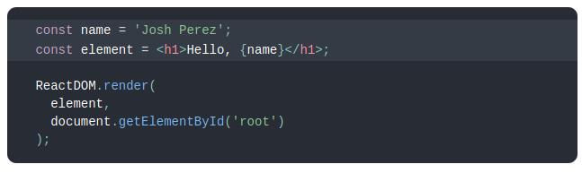

React, също срещан под наименование ReactJS е JavaScript библиотека, използвана за изграждане на потребителски интерфейси. React играе изключително важна роля в изграждането на модерни уебсайтове и уеб приложения. Познат в Angular и Meteor e така нареченият стил на реактивното програмиране. При него е характерно, че промяна на данните води до пререндериране на UI-я. От тази методология се предполага че произлиза и името на ReactJS. За разлика от Angular, ReactJS не е framework. React може да се използва като основа за разработката на SPA или мобилни приложения. За пример едни от най-големите компании, които освен че използват React, също така го и разработват, са Facebook и Instagram. Към момента React има над 147 хиляди звезди в GitHub.
А сега малко за това откъде е тръгнало всичко....
ReactJS е създаден през 2011-та година след като разработчиците във Facebook започнали да се сблъскват с
известни проблеми. Прототипната версия се казвала FaxJS. С увеличаване на екипа и поддържаните свойства
на Facebook Ads, процесът на разработка се забавял. След известно време поддръжката на кода станала
изключително трудна, а разработката на нова функционалност – свързана с каскадни промени по
съществуващия код. Решението, с което Facebook излезли било преработка на прототипната версия и
вкарването й в употреба, вече под наименованието React. Човекът, работил по това е Jordan Walke.
Следващата стъпка в историята идва след като Instagram пожелали също да използват новата технология. При
тези обстоятелства, Facebook трябвало да разкачат зависимостите на React от Facebook и да отворят кода
на библиотеката. Това се случило през май 2013-та година.
През 2013 се ражда и ReactNative като проект за вътрешен хакатон във Facebook. Две години по-късно
излиза първата му официална версия.
С времето се правели все повече интеграции с езици, технологии и други библиотеки. Популярността на
React растяла и до днес се използва от множество големи копании.
Както вече споменахме - React е удобен за създаване изгледа на уеб и мобилни приложения. Главните му цели са да предоставя бързина, мащабируемост и леснота за използване. Библиотеката позволява на разработчиците да съдават големи приложения, променящи данни без да презареждат цялата страницата, а само променените компоненти. Това се случва посредством така нареченото виртуално дърво, за което ще разберем след малко.
Виртуалното дърво - Virtual DOM(VDOM) е концепция, въведена в някои JavaScript библиотеки, включително
React, която се изгражда над браузър API-тата.
Идеята ѝ тук е да държи виртуална версия на истинския DOM в паметта и да се
синхронизира с него чрез ReactDOM библиотеката например. Този процес се нарича
reconciliation. По този начин не се грижим за ръчна промяна на DOM елементите и прихващане
на някои събития, а единствено оказваме в какво състояние(state) искаме те да бъдат.
Библиотеката се грижи за останалото. Процесът на reconsiliation не взима обичайния алгоритъм със
сложност O(n^3),
който би рендерирал цялото дърво от реакт елементи и при промяна на стойност или състояние, да
пререндерира всичко.
Вместо това алгоритъмът, който се използва има сложност O(n). Този алгоритъм се базира на две важни
условия - 1) ако два
елемента са от различен тип, те ще произведат две различни дървета; 2) Програмистът може и би трябвало
да дефинира различен
key за деца от един и същ тип за да помогне на React да се справи по-бързо със сравнението.
Към момента с React 16 се използва Fiber като reconciliation
engine.

Едно от главните неща в React е начинът, по който се движат данните и събитията между компонентите.
Данните винаги се движат в посока потребителски данни -> родителска компонента -> дъщерна компонента,
а потокът на събития съответно е в обратен ред.
 Главна структурна концепция в React е тази за използване на компоненти.
Вместо изкуствено да се разделят технологиите чрез разделяне на логиката и маркъп частта в отделни
файлове, в React работата се разделя между слабо зависими помежду си части, наречени компоненти. Те са
като блокчета лего, които сглабят една цялостна страница или съответно приложение. Всяко „блокче лего“ е
малко преизползваемо парче код.
Главна структурна концепция в React е тази за използване на компоненти.
Вместо изкуствено да се разделят технологиите чрез разделяне на логиката и маркъп частта в отделни
файлове, в React работата се разделя между слабо зависими помежду си части, наречени компоненти. Те са
като блокчета лего, които сглабят една цялостна страница или съответно приложение. Всяко „блокче лего“ е
малко преизползваемо парче код.
Но преди компонентите – нещо малко по-просто. Ако искате да присвоите html код на променлива, това е
напълно възможно със следния синтаксис:
 Това обаче не е нито html, нито символен низ. Това е така нареченият JSX. React използва това
надграждане над JavaScript за да създаде своите елементи, изграждащи копонентите. Разбира се не е
задължително една компонента да съдържа JSX, но за да носи тя някакъв визуален смисъл – обикновено това
е факт. Тези елементи могат да бъдат използвани и като return стойност на
функция. Ако искаме да върнем например два параграфа под формата на един JSX елемент обаче имаме
условието
за само един коренов елемент. В такъв случай може да се използва и празният елемент - <>
</>, обграждащ двата параграфа, запазвайки ги заедно. В JSX елемент може да бъде вкаран и
всякакъв валиден JavaScript израз посредством ограждането му с {}. Този израз може да е променлива,
дефинирана по-рано, извикване на функция, математически израз или друго.
Това обаче не е нито html, нито символен низ. Това е така нареченият JSX. React използва това
надграждане над JavaScript за да създаде своите елементи, изграждащи копонентите. Разбира се не е
задължително една компонента да съдържа JSX, но за да носи тя някакъв визуален смисъл – обикновено това
е факт. Тези елементи могат да бъдат използвани и като return стойност на
функция. Ако искаме да върнем например два параграфа под формата на един JSX елемент обаче имаме
условието
за само един коренов елемент. В такъв случай може да се използва и празният елемент - <>
</>, обграждащ двата параграфа, запазвайки ги заедно. В JSX елемент може да бъде вкаран и
всякакъв валиден JavaScript израз посредством ограждането му с {}. Този израз може да е променлива,
дефинирана по-рано, извикване на функция, математически израз или друго.

Друго нещо, което може да се забележи в горния пример е начинът на рендериране на елемент в DOM дървото.
На ReactDOM.render функцията се подава съответният елемент, който искаме да покажем. React елементите в
дървото концептуално не се променят. Те представляват конкретна своя фаза в даден момент – също като
фрейм по време на игра например. Ако нещо в тях се промени, те трябва да се рендерират отново, а React
се грижи единствено променените неща да се пререндерират. Знанието за това идва от сравнение на текущото
състояние във виртуалното дърво и това в реалното. Именно от тук идва и бързината. Променят се само
нещата, които трябва без да зареждаме отново всички елементи от страницата.
Добре е да се вметне и че React дървото извършва т.нар. еscaping, който не позволява появата на
инжекции(XSS атаки) в кода от външни данни.
Вече достигаме съществената част – компонентите.
Компонентите в react.js имат две главни свойства – приемат входни параметри под формата на т.нар. props
и
връщат като резултат react елемент, който описва как тази компонента трябва да изглежда на екрана.
Kомпонента може да се дефинира по няколко различни начина – с функция или посредством клас.
Компонента, създадена като функция лесно може да се превърне в клас в 5 стъпки:
- Създаваме клас със същото име като функцията. Тук добра практика е за разлика от функциите, класовете са започват с главна буква. Второто условие за този клас е да разширява React.Component
- Добавяме метод render() към този клас. Това е единственият задължителен за имплементация метод когато създаваме нова клас компонента. Целта на този метод е да върне задължителния JSX, очакван от концепцията за компонента.
- Преместваме тялото на функцията в render метода.
- Ако някъде се използват props, тук те идват като this.props и трябва да бъде променено.
- Изтриваме старата компонента - функция.
Когато React види елемент, репрезентиращ собствена компонента, той подава
всички JSX атрибути към тази компонента като единствен обект, наречен props.
Тези props не трябва да бъдат модифицирани!
 Горният пример също показва и вграждането на собствени компоненти една в друга - едно също много удобно
свойство, позволяващо по-голяма преизползваемост.
Горният пример също показва и вграждането на собствени компоненти една в друга - едно също много удобно
свойство, позволяващо по-голяма преизползваемост.
A сега малко за състоянието на компонентите(state).
Състоянието съдържа данни, специфични за тази компонента, които могат да се променят с времето.
В React терминологията често се срещат изразите stateless и statefull компонента и
както може би се досещате - едната държи свои променливи в state, a другата - не.
Състоянието на компонентата представлява обикновен JavaScript обект. Ако дадена стойност не се
използва
за рендериране или управление на потока от данни, то не е нужно да се слага в state.
 Местата, където може да се дефинира state са в scope-a на класа извън други методи, обикновено в
началото на дефиницията на класа, или
в конструктора на класа.
Конструкторът е функцията, извиквана преди компонентата да се
mount-не във витруалното дърво. Обикновено ако не се инициализира състояние и не се използва binding на
методи, този метод не се имплементира.
Състоянието на компонентата не трябва да се променя(мутира) директно. За целта използваме
метода this.setState(), идващ от React.Component. Toй се изпълнява асинхронно в
event handlers. React изчаква докато всички зависими компоненти извикат своя setState в своите
event handlers и тогава започва пререндерирането. Това подсигурява, че ако и дете, и родител извикат
setState по време на събитието клик например, детето няма да се пререндерира два пъти, а само веднъж.
Това осигурява значително увеличение на производителността особено в големи приложения.
При промяна на състоянието на определена стойност, но не
на цялото състояние, отново използваме setState като подаваме обект, съдържащ само тази стойност. React
слива
текущото състояние и новото като заменя стойността, която вече съществува с новата.
Местата, където може да се дефинира state са в scope-a на класа извън други методи, обикновено в
началото на дефиницията на класа, или
в конструктора на класа.
Конструкторът е функцията, извиквана преди компонентата да се
mount-не във витруалното дърво. Обикновено ако не се инициализира състояние и не се използва binding на
методи, този метод не се имплементира.
Състоянието на компонентата не трябва да се променя(мутира) директно. За целта използваме
метода this.setState(), идващ от React.Component. Toй се изпълнява асинхронно в
event handlers. React изчаква докато всички зависими компоненти извикат своя setState в своите
event handlers и тогава започва пререндерирането. Това подсигурява, че ако и дете, и родител извикат
setState по време на събитието клик например, детето няма да се пререндерира два пъти, а само веднъж.
Това осигурява значително увеличение на производителността особено в големи приложения.
При промяна на състоянието на определена стойност, но не
на цялото състояние, отново използваме setState като подаваме обект, съдържащ само тази стойност. React
слива
текущото състояние и новото като заменя стойността, която вече съществува с новата.

В горния пример забелязваме и метода componentDidMount. Това е един също ключов за компонентата метод. Извиква се след като съдържанието на компонентата се е рендерирало върху DOM дървото. Така вече сме сигурни, че съответните елементи, върху които искаме да направим манипулация са налични и няма да получим грешка. Ако искаме да вземем външни данни, тук е най-правилният момент да го направим. Вече споменахме два от така наречените lifecycle методи - render и componentDidMount. Този тип методи подсигуряват правилното протичане на живота на една компонента в следните етапи:
- Mounting – Birth of your component
- Update – Growth of your component
- Unmount – Death of your component
Сега ще разгледаме още два от по-употребяваните.
сomponentDidUpdate методът се извиква след всяка промяна, налагаща ново извикване на
render и по-конкретно след като промяната, изискваща това извикване вече е отразена в DOM дървото.
componentWillUnmount методът се извиква веднага преди компонента да се премахне от DOM дървото.
Тук е добре да се извършат всички възможни изчиствания като прекратяване на заявки например.
И за малко по-обща представа кое точно след кое се извършва, разгледайте следната диаграма:

В React 16.8 е въведена концепцията за така наречените hooks(куки).
Те позволяват да се използва състоянието на компонентата и други нейни функции без необходимостта да се
пише клас.
Тук главна роля играят функциите:
useState, която връща стойност на променлива и setter за стойността ѝ.
Важно тук е hooks с useState да се извикват винаги в един и същ ред.
useEffect, която приема callback функция и зависимости.
Забележка: Не е добра идея да се използват hooks във второстепенни слоеве на компонентата като
условни изрази, цикли и т.н. и hook трбва да се вика само от React компонентни функции, но не и от
нормални функции или компоненти, имплементирани с клас.
Ето и един пример за разликата в написването на една компонента без и със хуукове.
При използване на hooks може да се разграничи малко по-различен метод на обработка на събитията. Може да представим lifecycle диаграмата по следния начин:
Едно изключително приятно нещо в React за мен са async/await функциите. Те се поддържат от версия 7.6.0 насам. Изключително употребявани са и в друга JavaScript среда - Node.js. За хората писали JavaScript, така наречените promises са неотменна част от писането на код. В React вместо писане на логиката за изчакване с promises и then, се използват горните две функции. Със запазената дума async обозначаваме, че дадена функция се изпълнява асинхронно, но стигайки до await казваме спри и изчакай да дойдат данните и тогава продължи изпълнението. Aко използвайки promises, взимането на данни от някакво API в componentDidMount, където казахме е най-подходящото място за такъв тип заявки, би изглеждало така: то използвайки async и await, би изглеждало по следния начин:
Нека споменем макар и с няколко думи някои технологии, които изключително често се използват в практиката заедно с React.
- React Router DOM - набор от навигационни компоненти като Link, Route, Redirect и други.
- Redux - предоставя споделен "контейнер" за запазване на състоянието за повече от една компонента. Използва се в случаи на множество компоненти, зависещи от едно и също обще състояние. Състоянието е read-only и промените се извършват посредством функции. Удобно е за спестяване на ресурс като междувременно дава на всяка използваща компонента само това, което й трябва. Много хора го смятат за ненужно утежняване особено след като вече съществува context API в React.
- Reflux - сходно като идея на Redux. Използва actions и stores за да менажира кога компонента трябва да се промени. Основна причина за появата на този тип допълнителна архитектура е ограничението в базовата концепция на React за еднопосочен поток на данните - от главна към подчинена компонента, но не и обратно.
- Semantic - набор от готови стилизирани компоненти за приятен дизайн на страници.
- Material - сходно на Semantic, но с по-различен дизайн.
- Прост и лесен за учене
- Преизползваемост на компонентите
- Бързина и ефикаснос на работа
- Широка употреба към момента
- Има повече от едно приложение - не само за уеб, но и мобилни приложения
[2] https://skillcrush.com/blog/what-is-react-js/ Написано от Scott Morris, последно посетен на 05.04.2020
[3] https://blog.risingstack.com/the-history-of-react-js-on-a-timeline Написано от Ferenc Hamori, последно посетен на 05.04.2020
[4] http://thenewstack.io/javascripts-history-and-how-it-led-to-reactjs/ Написано от Chris Dawson на 25.07.2014, последно посетен на 05.04.2020
[5] https://medium.com/react-native-development/a-brief-history-of-react-native-aae11f4ca39 Написано от Shoutem на 3.10.2016, последно посетен на 05.04.2020
[6] https://reactnative.dev/ Официален сайт на React Native, последно посетен на 05.04.2020
[7] https://reactjs.org/docs/getting-started.html Официална документация на ReactJS. Oт тук са взети и примерите със сорс код, последно посетен на 09.04.20
[8] https://www.infoworld.com/article/2608181/react--making-faster--smoother-uis-for-data-driven-web-apps.html Написана на 15.05.2014 от Paul Krill, последно посетен на 08.04.20
[9] https://reactjs.org/docs/faq-internals.htmlЧаст от официалната документация, описваща в по-големи детайли работата с VDOM, последно посетена на 08.04.20
[10] https://programmingwithmosh.com/javascript/stateful-stateless-components-react/ Написана на 10.04.2019 от Mosh Hamedani, последно посетена на 09.04.20
[11] https://www.valentinog.com/blog/await-react/ Написана на 7.02.2020 от Valentino Gagliardi, последно посетена на 10.04.20
[12] https://www.valentinog.com/blog/redux/ Написана на 10.03.2020 от Valentino Gagliardi, последно посетена на 10.04.20
[13] https://reacttraining.com/react-router/ Официална документация на React Router, последно посетена на 10.04.20
[14] https://react.semantic-ui.com/ Официален сайт на Semantic React, последно посетен на 10.04.20
[15] https://material-ui.com/ Официален сайт на Mаterial UI, последно посетен на 10.04.20
[16] https://stories.jotform.com/7-reasons-why-you-should-use-react-ad420c634247 Написана на 27.01.2017 oт Kautlu Sahin, последно посетена на 10.04.20